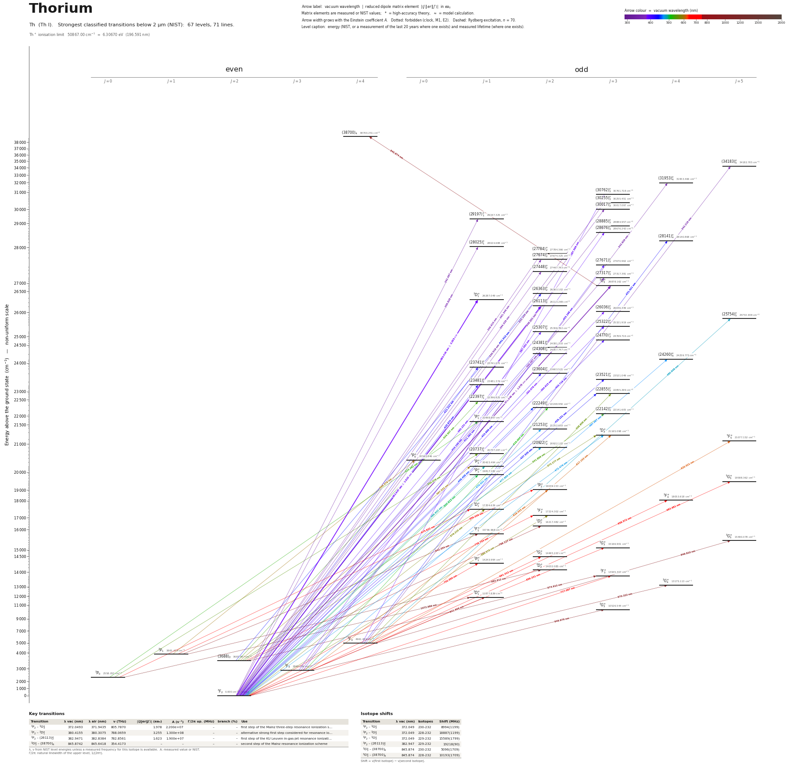

Thorium energy level diagram
Energy levels and transitions of neutral thorium (Th I): the 71 strongest classified lines below 2 µm from the NIST Atomic Spectra Database and the 67 levels they connect, each line with its vacuum wavelength, frequency and, for 3 of them, the reduced dipole matrix element derived from the NIST transition rate. Measured lifetimes, transition rates, hyperfine constants and isotope shifts from the literature are included, each with its citation.
Hover a line or a level to isolate it, click to keep it selected. Scroll to zoom, drag to move.

Download: diagram (PDF) diagram (SVG) transitions (CSV) levels (CSV) source code

Key transitions of thorium
| Transition | λ vac (nm) | λ air (nm) | ν (THz) | |⟨J‖er‖J′⟩| (ea₀) | A (s⁻¹) | Γ/2π up. (MHz) | branch (%) | Use |
|---|---|---|---|---|---|---|---|---|
| 3F2 – 3G°3 | 372.0493 | 371.9435 | 805.7870 | 1.978 | 2.200e+07 | – | – | first step of the Mainz three-step resonance ionization s… |
| 3F2 – 3D°1 | 380.4155 | 380.3075 | 788.0659 | 3.255 | 1.300e+08 | – | – | alternative strong first step considered for resonance io… |
| 3F2 – (26113)°2 | 382.9471 | 382.8384 | 782.8561 | 1.623 | 1.900e+07 | – | – | first step of the KU Leuven in-gas-jet resonance ionizati… |
| 3G°3 – (38700)4 | 845.8742 | 845.6418 | 354.4173 | – | – | – | – | second step of the Mainz resonance ionization scheme |
λ, ν from NIST level energies unless a measured frequency for this isotope is available. A: measured value or NIST. Γ/2π: natural linewidth of the upper level, 1/(2πτ).
Isotope shifts
| Transition | λ vac (nm) | Isotopes | Shift (MHz) |
|---|---|---|---|
| 3F2 – 3G°3 | 372.049 | 230-232 | 8994(1199) |
| 3F2 – 3G°3 | 372.049 | 228-232 | 18887(1199) |
| 3F2 – 3G°3 | 372.049 | 229-232 | 15589(1799) |
| 3F2 – (26113)°2 | 382.947 | 229-232 | 19218(90) |
| 3G°3 – (38700)4 | 845.874 | 230-232 | 5096(1709) |
| 3G°3 – (38700)4 | 845.874 | 228-232 | 10193(1709) |
Shift = ν(first isotope) − ν(second isotope).
Listed Th transitions below 2 µm
| Lower level | Upper level | λ vacuum (nm) | λ air (nm) | ν (THz) | Type | |⟨J‖er‖J′⟩| (ea₀) | A (s⁻¹) | Branching (%) | Source of matrix element / A |
|---|---|---|---|---|---|---|---|---|---|
| 3F2 | (30255)°3 | 330.5190 | 330.4238 | 907.0356 | E1 | – | – | – | – |
| 3F2 | (30017)°3 | 333.1435 | 333.0477 | 899.8899 | E1 | – | – | – | – |
| 3F4 | (34183)°5 | 342.2191 | 342.1210 | 876.0249 | E1 | – | – | – | – |
| 3F2 | (29197)°1 | 342.4971 | 342.3989 | 875.3138 | E1 | – | – | – | – |
| 3F3 | (31953)°4 | 343.8292 | 343.7307 | 871.9226 | E1 | – | – | – | – |
| 3F2 | (28885)°3 | 346.2010 | 346.1018 | 865.9492 | E1 | – | – | – | – |
| 3F2 | (28025)°1 | 356.8282 | 356.7264 | 840.1590 | E1 | – | – | – | – |
| 3F2 | (27784)°2 | 359.9146 | 359.8120 | 832.9543 | E1 | – | – | – | – |
| 3F2 | (27674)°2 | 361.3458 | 361.2427 | 829.6554 | E1 | – | – | – | – |
| 3F2 | (27448)°2 | 364.3287 | 364.2249 | 822.8627 | E1 | – | – | – | – |
| 3F2 | (27317)°3 | 366.0672 | 365.9629 | 818.9548 | E1 | – | – | – | – |
| 3F2 | 3G°3 | 372.0493 | 371.9435 | 805.7870 | E1 | 1.978 measured | 2.200e+07 measured | – | value printed in Fig. 2 of Raeder, Sonnenschein, Gottwald, Moore, Reponen, Rothe, Trautma… |
| 3F2 | 3D°1 | 380.4155 | 380.3075 | 788.0659 | E1 | 3.255 measured | 1.300e+08 measured | – | value printed in Fig. 2 of Raeder, Sonnenschein, Gottwald, Moore, Reponen, Rothe, Trautma… |
| 3F2 | (26113)°2 | 382.9471 | 382.8384 | 782.8561 | E1 | 1.623 measured | 1.900e+07 measured | – | value printed in Fig. 2 of Raeder, Sonnenschein, Gottwald, Moore, Reponen, Rothe, Trautma… |
| 3F2 | (26036)°3 | 384.0784 | 383.9695 | 780.5501 | E1 | – | – | – | – |
| 3F3 | (28676)°3 | 387.4920 | 387.3822 | 773.6739 | E1 | – | – | – | – |
| 3F4 | (30762)°3 | 387.5960 | 387.4862 | 773.4663 | E1 | – | – | – | – |
| 3F2 | (25322)°3 | 394.9148 | 394.8030 | 759.1320 | E1 | – | – | – | – |
| 3F2 | (25307)°2 | 395.1513 | 395.0395 | 758.6776 | E1 | – | – | – | – |
| 3F3 | (27671)°3 | 403.1981 | 403.0842 | 743.5363 | E1 | – | – | – | – |
| 3F2 | (24770)°3 | 403.7188 | 403.6048 | 742.5774 | E1 | – | – | – | – |
| 3F2 | (24381)°2 | 410.1498 | 410.0341 | 730.9340 | E1 | – | – | – | – |
| 3F2 | (24308)°2 | 411.3915 | 411.2754 | 728.7279 | E1 | – | – | – | – |
| 3F2 | (23741)°1 | 421.2109 | 421.0923 | 711.7395 | E1 | – | – | – | – |
| 3F2 | (23604)°2 | 423.6656 | 423.5463 | 707.6158 | E1 | – | – | – | – |
| 3F2 | (23521)°3 | 425.1511 | 425.0314 | 705.1433 | E1 | – | – | – | – |
| 3F2 | (23481)°1 | 425.8695 | 425.7496 | 703.9539 | E1 | – | – | – | – |
| 3F4 | (28141)°4 | 431.4211 | 431.2998 | 694.8952 | E1 | – | – | – | – |
| 3F2 | (22855)°3 | 437.5353 | 437.4124 | 685.1846 | E1 | – | – | – | – |
| (3688)2 | (26363)°2 | 441.0121 | 440.8883 | 679.7828 | E1 | – | – | – | – |
| 3F2 | (22249)°2 | 449.4594 | 449.3334 | 667.0067 | E1 | – | – | – | – |
| 3F3 | (24260)°4 | 467.4969 | 467.3661 | 641.2715 | E1 | – | – | – | – |
| 3F2 | (21253)°2 | 470.5306 | 470.3990 | 637.1370 | E1 | – | – | – | – |
| 3F2 | 3D°3 | 472.4760 | 472.3438 | 634.5137 | E1 | – | – | – | – |
| 3F2 | (20922)°2 | 477.9630 | 477.8294 | 627.2295 | E1 | – | – | – | – |
| 3F4 | (25754)°5 | 480.9478 | 480.8134 | 623.3369 | E1 | – | – | – | – |
| 3F2 | 3P°1 | 489.6322 | 489.4955 | 612.2809 | E1 | – | – | – | – |
| 3F2 | 5P°1 | 504.6126 | 504.4719 | 594.1042 | E1 (intercombination) | – | – | – | – |
| 3F3 | (22249)°2 | 516.0041 | 515.8604 | 580.9885 | E1 | – | – | – | – |
| 3P0 | 5P°1 | 523.2616 | 523.1159 | 572.9304 | E1 (intercombination) | – | – | – | – |
| (3688)2 | (22397)°1 | 534.5067 | 534.3581 | 560.8768 | E1 | – | – | – | – |
| (3688)2 | (22142)°3 | 541.8992 | 541.7486 | 553.2255 | E1 | – | – | – | – |
| 3P0 | (20737)°1 | 550.0783 | 549.9255 | 544.9996 | E1 | – | – | – | – |
| 3F4 | (22855)°3 | 558.8578 | 558.7026 | 536.4379 | E1 | – | – | – | – |
| (3688)2 | 3D°3 | 572.1770 | 572.0183 | 523.9506 | E1 | – | – | – | – |
| 3F2 | 3D°1 | 576.2148 | 576.0550 | 520.2790 | E1 | – | – | – | – |
| 3F2 | 5F°2 | 580.5750 | 580.4141 | 516.3716 | E1 (intercombination) | – | – | – | – |
| (3688)2 | 3P°1 | 597.5319 | 597.3665 | 501.7179 | E1 | – | – | – | – |
| 3P1 | 3P°0 | 599.5789 | 599.4129 | 500.0050 | E1 | – | – | – | – |
| 3F4 | 3D°3 | 617.1529 | 616.9822 | 485.7669 | E1 | – | – | – | – |
| 3F3 | 3P°2 | 618.4332 | 618.2621 | 484.7612 | E1 | – | – | – | – |
| 3F4 | 5F°5 | 620.5209 | 620.3492 | 483.1303 | E1 (intercombination) | – | – | – | – |
| 3F3 | 3F°4 | 658.5724 | 658.3906 | 455.2156 | E1 | – | – | – | – |
| 3P1 | 3P°2 | 659.0359 | 658.8539 | 454.8955 | E1 | – | – | – | – |
| 3F2 | 5G°3 | 659.3305 | 659.1484 | 454.6922 | E1 (intercombination) | – | – | – | – |
| 3P0 | 3D°1 | 675.8318 | 675.6453 | 443.5904 | E1 | – | – | – | – |
| 3F4 | 5G°5 | 683.6811 | 683.4924 | 438.4975 | E1 (intercombination) | – | – | – | – |
| 3F2 | 5G°2 | 691.3133 | 691.1226 | 433.6564 | E1 (intercombination) | – | – | – | – |
| 3F2 | 3P°1 | 702.0503 | 701.8567 | 427.0242 | E1 | – | – | – | – |
| 3F2 | 3F°3 | 717.0871 | 716.8895 | 418.0698 | E1 | – | – | – | – |
| (3688)2 | 5F°2 | 738.7535 | 738.5500 | 405.8085 | E1 | – | – | – | – |
| (3688)2 | 1D°2 | 798.1168 | 797.8973 | 375.6248 | E1 | – | – | – | – |
| 3F2 | 3D°1 | 841.9040 | 841.6727 | 356.0887 | E1 | – | – | – | – |
| 3P1 | 5F°1 | 842.3539 | 842.1225 | 355.8984 | E1 (intercombination) | – | – | – | – |
| 3G°3 | (38700)4 | 845.8742 | 845.6418 | 354.4173 | E1 | – | – | – | – |
| 3F4 | 3G°5 | 949.8102 | 949.5497 | 315.6341 | E1 | – | – | – | – |
| 3F2 | 3G°3 | 949.9794 | 949.7188 | 315.5779 | E1 | – | – | – | – |
| 3F3 | 3G°4 | 970.3223 | 970.0562 | 308.9617 | E1 | – | – | – | – |
| (3688)2 | 3F°3 | 974.9135 | 974.6462 | 307.5067 | E1 | – | – | – | – |
| 3P1 | 3D°2 | 983.6119 | 983.3422 | 304.7874 | E1 | – | – | – | – |
| 3P0 | 3D°1 | 1072.9864 | 1072.6926 | 279.4001 | E1 | – | – | – | – |
Reduced dipole matrix elements follow the convention A = ω³|d|²/(3πε₀ħc³(2J′+1)), with J′ the upper level. Tags show where a number comes from: measured, NIST compilation, high-accuracy theory, or a model calculation.
Th energy levels
| Level | Energy (cm⁻¹) | J | Parity | Lifetime | gJ | Hyperfine A (MHz) | Hyperfine B (MHz) | Lifetime source | Hyperfine source |
|---|---|---|---|---|---|---|---|---|---|
| 3F2 | 0.000 | 2 | even | stable | 0.735 | – | – | – | – |
| 3P0 | 2558.057 | 0 | even | – | – | – | – | – | – |
| 3F3 | 2869.259 | 3 | even | – | 1.085 | – | – | – | – |
| (3688)2 | 3687.987 | 2 | even | – | 1.255 | – | – | – | – |
| 3P1 | 3865.474 | 1 | even | – | 1.48 | – | – | – | – |
| 3F4 | 4961.659 | 4 | even | – | 1.21 | – | – | – | – |
| 3G°3 | 10526.544 | 3 | odd | – | 0.87 | – | – | – | – |
| 3D°1 | 11877.839 | 1 | odd | – | 0.725 | – | – | – | – |
| 3G°4 | 13175.113 | 4 | odd | – | 1.095 | – | – | – | – |
| 3F°3 | 13945.307 | 3 | odd | – | 1.11 | – | – | – | – |
| 3D°2 | 14032.085 | 2 | odd | – | 1.125 | – | – | – | – |
| 3P°1 | 14243.994 | 1 | odd | – | 1.205 | – | – | – | – |
| 5G°2 | 14465.222 | 2 | odd | – | 0.81 | – | – | – | – |
| 5G°3 | 15166.901 | 3 | odd | – | 1.065 | – | – | – | – |
| 3G°5 | 15490.078 | 5 | odd | – | 1.19 | – | – | – | – |
| 5F°1 | 15736.968 | 1 | odd | – | 0.385 | – | – | – | – |
| 1D°2 | 16217.482 | 2 | odd | – | 1.07 | – | – | – | – |
| 5F°2 | 17224.302 | 2 | odd | – | 1.045 | – | – | – | – |
| 3D°1 | 17354.639 | 1 | odd | – | 0.505 | – | – | – | – |
| 3F°4 | 18053.618 | 4 | odd | – | 1.185 | – | – | – | – |
| 3P°2 | 19039.153 | 2 | odd | – | 1.09 | – | – | – | – |
| 5G°5 | 19588.362 | 5 | odd | – | 1.15 | – | – | – | – |
| 5P°1 | 19817.182 | 1 | odd | – | 1.575 | – | – | – | – |
| 3P°1 | 20423.494 | 1 | odd | – | 1.43 | – | – | – | – |
| 3P°0 | 20543.846 | 0 | odd | – | – | – | – | – | – |
| (20737)°1 | 20737.287 | 1 | odd | – | 1.36 | – | – | – | – |
| (20922)°2 | 20922.122 | 2 | odd | – | 1.17 | – | – | – | – |
| 5F°5 | 21077.152 | 5 | odd | – | 1.25 | – | – | – | – |
| 3D°3 | 21165.098 | 3 | odd | – | 1.3 | – | – | – | – |
| (21253)°2 | 21252.603 | 2 | odd | – | 0.665 | – | – | – | – |
| 5P°1 | 21668.957 | 1 | odd | – | 1.575 | – | – | – | – |
| (22142)°3 | 22141.605 | 3 | odd | – | 1.1 | – | – | – | – |
| (22249)°2 | 22248.950 | 2 | odd | – | 1.145 | – | – | – | – |
| (22397)°1 | 22396.825 | 1 | odd | – | 1.525 | – | – | – | – |
| (22855)°3 | 22855.299 | 3 | odd | – | 1.13 | – | – | – | – |
| (23481)°1 | 23481.374 | 1 | odd | – | 0.845 | – | – | – | – |
| (23521)°3 | 23521.049 | 3 | odd | – | 1.075 | – | – | – | – |
| (23604)°2 | 23603.521 | 2 | odd | – | 1.375 | – | – | – | – |
| (23741)°1 | 23741.075 | 1 | odd | – | 0.77 | – | – | – | – |
| (24260)°4 | 24259.775 | 4 | odd | – | 1.04 | – | – | – | – |
| (24308)°2 | 24307.747 | 2 | odd | – | 1.515 | – | – | – | – |
| (24381)°2 | 24381.333 | 2 | odd | – | 1.255 | – | – | – | – |
| (24770)°3 | 24769.716 | 3 | odd | – | 1.14 | – | – | – | – |
| (25307)°2 | 25306.762 | 2 | odd | – | 1.165 | – | – | – | – |
| (25322)°3 | 25321.919 | 3 | odd | – | 1.39 | – | – | – | – |
| (25754)°5 | 25753.938 | 5 | odd | – | 1.14 | – | – | – | – |
| (26036)°3 | 26036.349 | 3 | odd | – | 0.955 | – | – | – | – |
| (26113)°2 | 26113.269 | 2 | odd | – | 0.98 | – | – | – | – |
| 3D°1 | 26287.049 | 1 | odd | – | 0.71 | – | – | – | – |
| (26363)°2 | 26363.102 | 2 | odd | – | 1.04 | – | – | – | – |
| 3G°3 | 26878.162 | 3 | odd | – | 0.905 | – | – | – | – |
| (27317)°3 | 27317.391 | 3 | odd | – | 1.08 | – | – | – | – |
| (27448)°2 | 27447.743 | 2 | odd | – | 1.07 | – | – | – | – |
| (27671)°3 | 27670.962 | 3 | odd | – | 1.21 | – | – | – | – |
| (27674)°2 | 27674.325 | 2 | odd | – | 1.095 | – | – | – | – |
| (27784)°2 | 27784.366 | 2 | odd | – | 0.87 | – | – | – | – |
| (28025)°1 | 28024.688 | 1 | odd | – | 1.025 | – | – | – | – |
| (28141)°4 | 28140.868 | 4 | odd | – | 1.22 | – | – | – | – |
| (28676)°3 | 28676.242 | 3 | odd | – | 1.08 | – | – | – | – |
| (28885)°3 | 28884.957 | 3 | odd | – | 1.19 | – | – | – | – |
| (29197)°1 | 29197.325 | 1 | odd | – | 1.15 | – | – | – | – |
| (30017)°3 | 30017.097 | 3 | odd | – | 1.12 | – | – | – | – |
| (30255)°3 | 30255.451 | 3 | odd | – | 1.09 | – | – | – | – |
| (30762)°3 | 30761.718 | 3 | odd | – | 1.19 | – | – | – | – |
| (31953)°4 | 31953.466 | 4 | odd | – | 1.085 | – | – | – | – |
| (34183)°5 | 34182.705 | 5 | odd | – | 1.095 | – | – | – | – |
| (38700)4 | 38700.251 | 4 | even | – | 1.22 | – | – | – | – |
Th⁺ ionisation limit 50867.00 cm⁻¹ = 6.30670 eV (196.591 nm)
Sources
- NIST ASD level energies
- value printed in Fig. 2 of Raeder, Sonnenschein, Gottwald, Moore, Reponen, Rothe, Trautma…
- value printed in Fig. 2 of Raeder, Sonnenschein, Gottwald, Moore, Reponen, Rothe, Trautma…
Natural thorium is 232Th (I = 0, no hyperfine structure); 229Th (I = 5/2) is the nuclear-clock isotope. Isotope shifts are nu(A) - nu(232); Raeder et al. give level shifts in cm^-1, converted here with 1 cm^-1 = 29979.2458 MHz. The pulsed-laser level energies of Raeder et al. for 232Th are much less precise than NIST and are listed only so that the 228-230Th values can be compared on the same scale. The intermediate levels re-measured by Li et al. 2025 (38807.60(6), 39096.36(15), 38366.56(15) cm^-1) agree with NIST and were not entered. The 2025 Leuven paper also determined the Th+ ionization potential, 12.300(9) eV.
Atoms with measured data
- Lithium-632 levels, 85 lines
- Lithium-732 levels, 85 lines
- Beryllium-917 levels, 26 lines
- Sodium-2336 levels, 106 lines
- Magnesium-2418 levels, 61 lines
- Magnesium-2518 levels, 61 lines
- Potassium-3934 levels, 84 lines
- Potassium-4034 levels, 84 lines
- Potassium-4134 levels, 84 lines
- Calcium-4035 levels, 61 lines
- Calcium-4335 levels, 61 lines
- Rubidium-8536 levels, 94 lines
- Rubidium-8736 levels, 94 lines
- Strontium-8740 levels, 70 lines
- Strontium-8840 levels, 70 lines
- Caesium-13331 levels, 79 lines
- Barium-13744 levels, 89 lines
- Barium-13844 levels, 89 lines
- Dysprosium-16339 levels, 55 lines
- Dysprosium-16439 levels, 55 lines
- Ytterbium-17118 levels, 26 lines
- Ytterbium-17418 levels, 26 lines